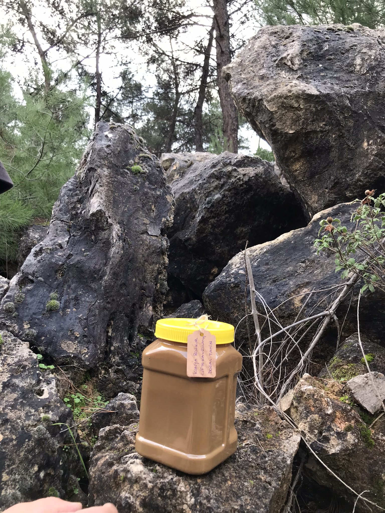
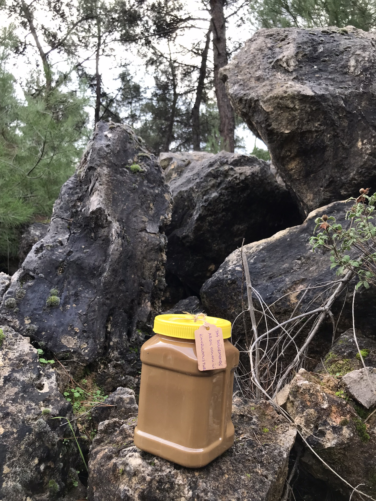
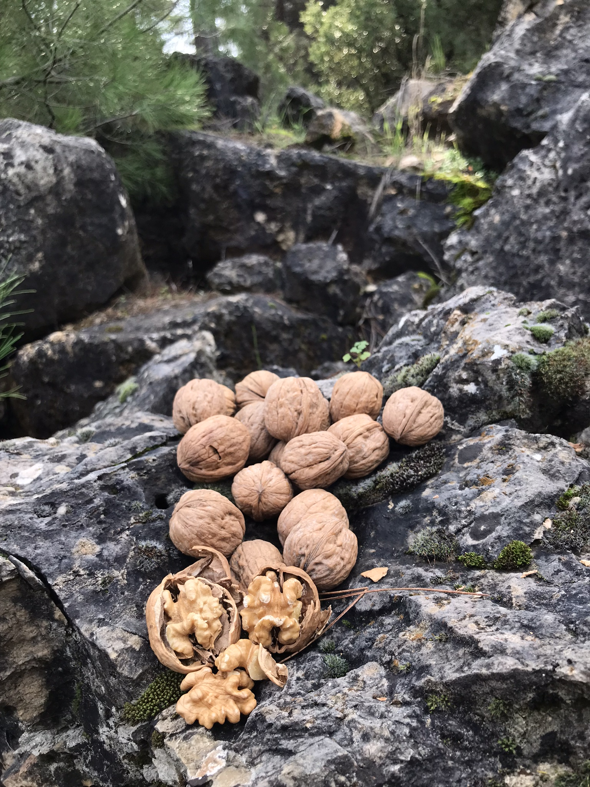
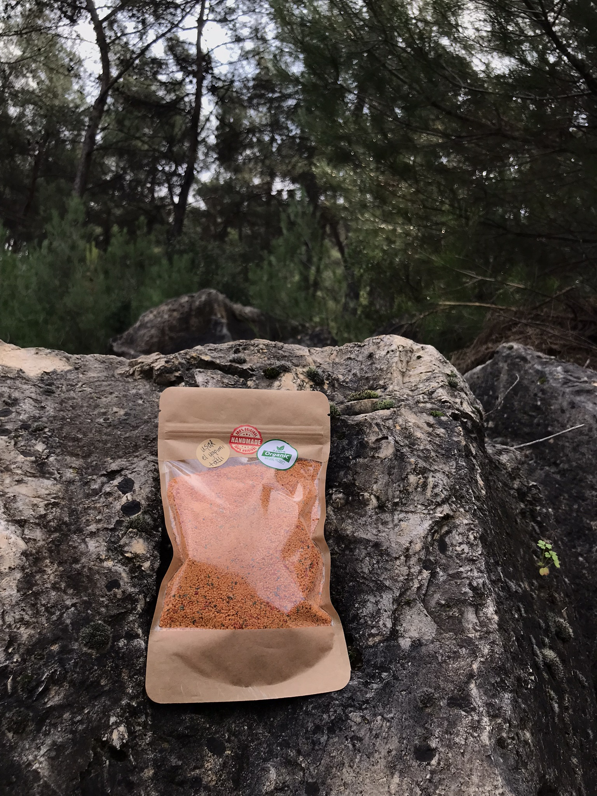
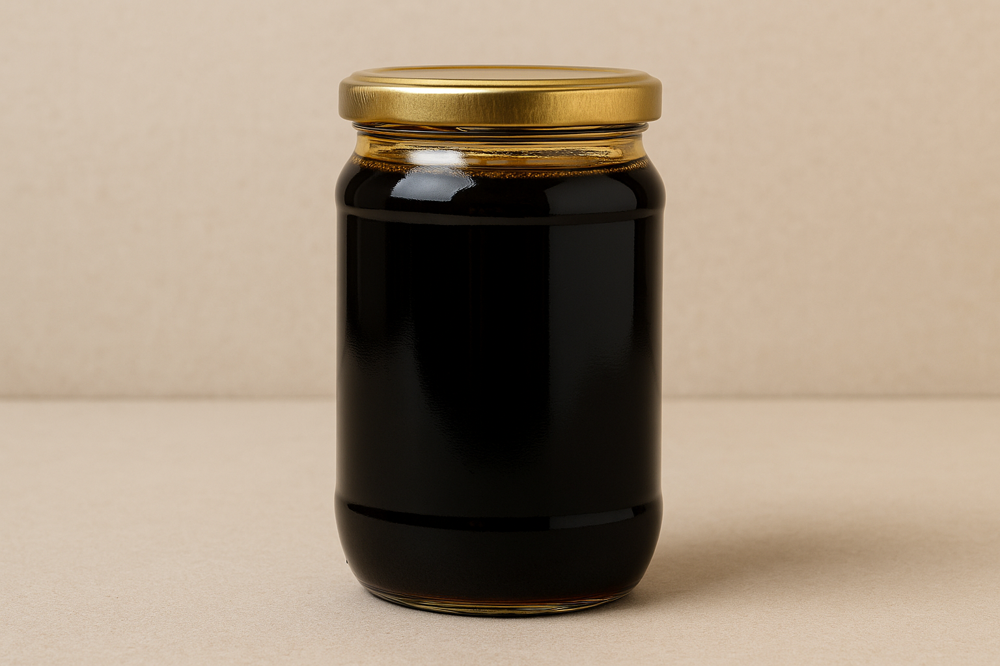

Toros dağlarının üzümünden doğal pekmez.

Taş değirmende kavrulmuş yoğun aromalı tahin.

Daha hafif kavurma tadında doğal tahin.

Katkısız, %100 doğal nar ekşisi.

Yerli üretim, kabuklu doğal ceviz.

Doğal fermente, el yapımı tarhana.

Doğal enerji kaynağı keçiboynuzu pekmezi.

Yöresel lezzet, pekmez aromalı helva.

Bitkisel formül, doğal destek.

Ananas enzimli doğal şurup.

Doğal kozalak özlü macun.